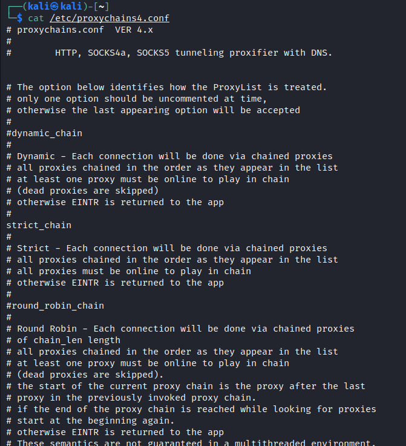

1st Tool : ProxyChains
cat /etc/proxychains4.conf


ssh -f -N -D 9050 i pivot root@10.10.155.5
where
-i for identity and that connection to root over
-f just backgrounds the ssh
-N means we don't want to execute remote commands and this is just ideal for port forwarding.
-D where we want to bind the port ?_?

Using Port 88 cuz a DC is sitting on this ip address and we now that port 88 is kerberosting.

Sometimes this scan doesn't work that well or it doesn't show anything but you know something is living on the other side at the IP address.
You can always do a -ST scan which is a TCP connect scan as supposed to running SYN scan which is default.
Sometimes this TCP connect scan will work where a SIN scan deson't espcially through proxy chain.
We can use proxychains to run classic kerberosting attack


Access the machine via RDP


Basically any command that you want to run, you can run with proxychains in front of it.